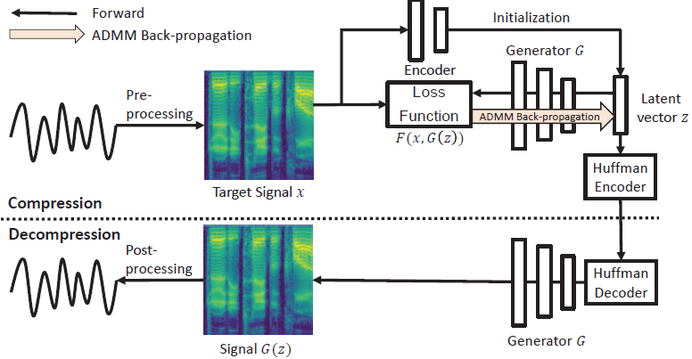
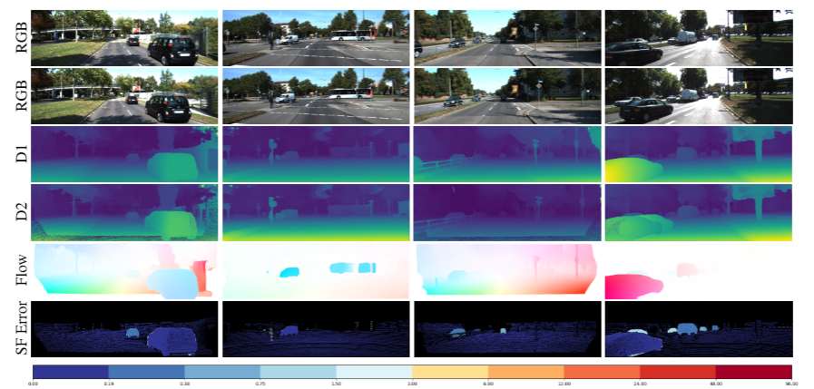

|
|
I am an incoming Ph.D. student (2020-) in Computer Science and Engineering (CSE) at the University of Michigan, Ann Arbor, supervised by Prof. Justin Johnson.
I work on Computer vision.
I got my M.S. degree(2018-2020) at the University of Michigan, majoring in Signal & Image Processing and Machine Learning in ECE. My Bachelor's degree (2014-2018) was received from the School of Electronic Information at Wuhan University in China.
Publication
|

|
Unified Signal Compression Using Generative Adverserial Networks
Bowen Liu *, Ang Cao, Hun-Seok Kim
International Conference on Acoustics, Speech, and Signal Processing (ICASSP) 2020.
Paper
We propose an ADMM (alternating direction method of multipliers) to compress the signal into quantized latent vectors.
|
Project
|

|
3D Rigid Motion Estimation
Hangting Cao, Ang Cao, Xincheng Yuan, Dong Chen
Course Project of EECS 504
Instructor: Andrew Owens
|
Awards
China National Scholarship, 2016, 2017
Meritorious Winner of Mathematical Contest in Modeling(MCM/ICM) 2017
|
{kind=link}
{kind=link}